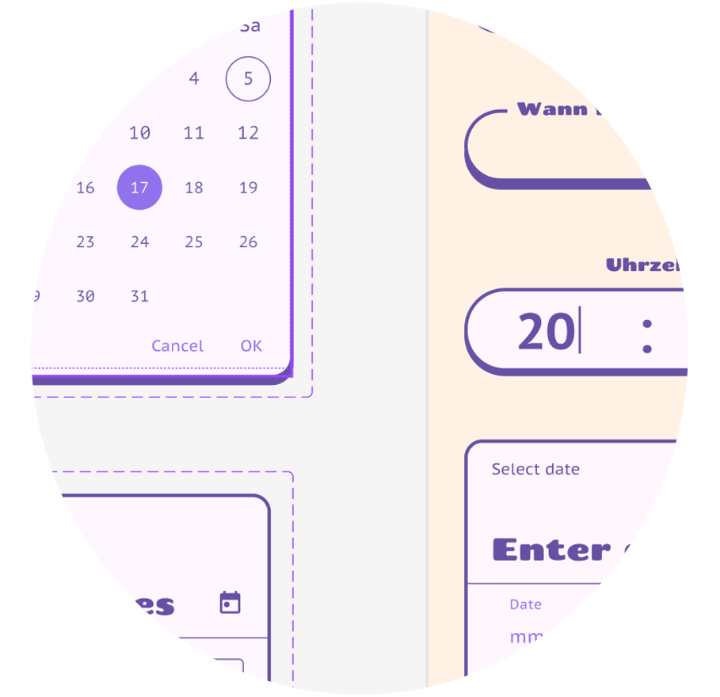

VENIO

Wir sind eine motivierte Gruppe Freiwilliger aus Freiburg, die ein neues soziales Netz entwickelt: Eine nicht-kommerzielle, simple, dezentrale Anwendung.
Sie soll allen zugänglich sein, Event-basiert statt Feed-basiert sein und Menschen tatsächlich zusammenbringen.
Wir freuen uns über Mithilfe in Programmierung, Design, Konzept und Testen! weiter
Gerade suchen wir besonders Unterstützung bei:
- Prototyp-Testen
- Frontend-Entwicklung
- HTML/CSS
Kontakt: dsii-freiburg@proton.me